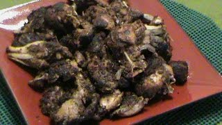
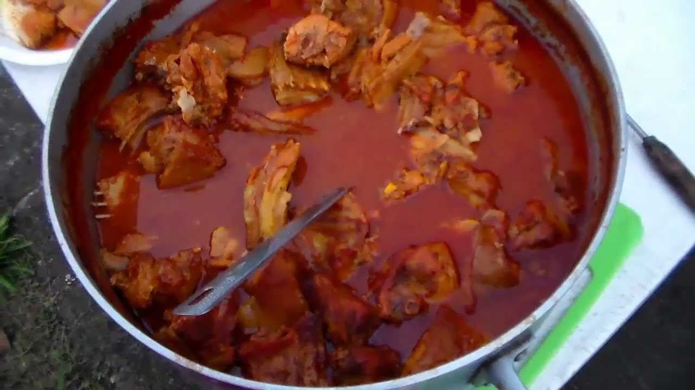

Entrevista a habitante de Chicontepec, lugar donde se consume el armadillo
La caza del armadillo y sus propiedades medicinales en Chicontepec
El armadillo es un piltecuanitzin “un animal silvestre” que habita en la Huasteca
Veracruzana. En las comunidades indígenas de Chicontepec conocen el armadillo bajo el
nombre de calolo porque el armadillo tiene un caparazón, debido a su parecido a un calli
que es casa, por lo tanto, el calolo en náhuatl sería “un animal que tiene su casa”. El calolo
regularmente vive en los bosques de Chicontepec. Los habitantes consumen la carne de
armadillo y lo consideran como pahtli “un remedio” para futuras enfermedades.
En cuanto a las propiedades curativas del calolo, sirve principalmente como prevención de enfermedades de los pulmones. Además se fríe con aceite de cocina la carne del calolo. Las personas hacen chicharrón la carne de armadillo. Después las personas guardan ichiyauhca calolo “la manteca del armadillo” que sirve como un pahtli “remedio.” Cuando un niño o una persona adulta se enferma de tos, neumonía y hasta de bronquitis, otra persona le embarra la manteca de calolo en el cuello y en el pecho con leves masajes como un remedio curativo.

Finalmente, los nahuas de Chicontepec ven al armadillo como un cualli tlapiyalli “un animal benéfico” ya que piensan que obtienen salud debido a sus propiedades medicinales. Los cazadores de armadillos no cazan como deporte, ni siquiera como un negocio. Los cazadores buscan el calolo porque los habitantes nahuas lo ven como parte de su medicina tradicional. Aunque atrapar un armadillo en una jaula es el método más eficaz de captura, es posible capturarlo con las manos o con una red. Por la noche, sitúate fuera de la madriguera y espera a que salga, entonces lanza una red sobre él o agárralo firmemente por la cola y levántalo en el aire.

Enfermedades que se atienden con el armadillo
En países como México, donde se alberga una alta diversidad tanto biológica como cultural,
existe un gran conocimiento y uso de los recursos biológicos por parte de diferentes grupos
étnicos; sin embargo, pocos estudios abarcan el aspecto de la fauna medicinal a pesar de
ser una práctica milenaria. Dada la escasa información al respecto, en el presente trabajo
se estudió a los dos grupos indígenas más representativos del estado de Chiapas: tsotsiles
y tseltales, ubicados en la región Altos. La finalidad del estudio consistió en conocer cuáles
especies de animales son utilizadas para curar enfermedades y su forma de empleo.

En cuanto al armadillo nos sirve para tratar sobre todo enfermedades pulmonares.
Cuando se presenta una disentería o bien llamado flujo, se utiliza el caparazón del
armadillo, donde se quema o se dora 13 pedazos cada día, se muelen y se toma en medio
vaso con agua, por 3 días en ayunas por la mañana. Sólo un pedacito, se mezcla con 13
granos de maíz y una pepa de mamey, se hierve todo y se toma el agua. Pero el armadillo no sólo sirve para esto. La caparazón y la cola son utilizadas para prácticas medicinales; se dejan tostar y se muelen hasta quedar en polvo, el cual es hervido en agua para ser bebido por mujeres “primerizas”, o que pasan por su primer embarazo, y curar las molestias que éste causa.

Además se puede tratar la tos ferina con el caparazón donde un pedazo se dora, se muele,
se pone en agua tibia y se toma las veces que sea necesario. Tres pedacitos se hierven y
se toma 3 veces al día por 3 días. Algo increíble es que se puede tratar la tuberculosis
también con el caparazón del armadillo que se deja secar 2 o 3 días, después se raspa un
poco y se pone en agua para beber y finalmente se hace en caldo que se bebe. Pero el armadillo no sólo sirve para esto. La caparazón y la cola son utilizadas para prácticas medicinales; se dejan tostar y se muelen hasta quedar en polvo, el cual es hervido en agua para ser bebido por mujeres “primerizas”, o que pasan por su primer embarazo, y curar las molestias que éste causa.

El armadillo como comida
Se trata de un alimento de alto consumo en las comunidades rurales e indígenas del
sureste del país. Su carne es un poco oscura y posee un fuerte olor, por lo que siempre es
necesario marinarla en naranja agria, vinagre o vino, o cocerla en agua con hierbas de olor.
Después se cocina de muchas formas. En Chiapas, Campeche y Tabasco se prepara asado
con o sin caparazón y se come en tacos.Los campesinos suelen deshuesar el animal y preparar la carne dentro de la caparazón para consumirla asada, frita o en guiso. Luego de freír la caparazón, se mastica de manera semejante al chicharrón o cuero del cerdo.

En el área del Soconusco, Chiapas, se guisa en adobo, en una salsa de chiles ancho y
chimborote, jitomate, cebolla, pimienta gorda, pimienta de Castilla, canela, vinagre y sal;
también se cocina en ciguamonte con papas, epazote y tomate verde. El armadillo en
escabeche se prepara cociendo la carne en agua con sal, hojas de laurel, ajo y pimienta
gorda; luego se deshebra y se marina en jugo de naranja agria, ajo y pimienta y se vuelve a
cocer por poco tiempo. Suele servirse caliente o a temperatura ambiente acompañado con
tortillas de maíz.

En el Estado de México se prepara al mojo de ajo; en Villa del Carbón se marina en ajo, se
asa o se hornea y se acompaña con salsa picante. En Nayarit, la carne limpia se corta en
trozos, se guisa con manteca de cerdo, cebolla y jitomate, y se acompaña con frijoles, salsa
de molcajete y tortillas de colores. En Oaxaca, en el Istmo de Tehuantepec, se cuece con
agua, achiote, ajo, chile guajillo, cebolla y sal, y se sirve acompañado con totopos y cilantro
picado. El armadillo se macera en jugo de limones por cuatro horas, aproximadamente,
previo a cocinarse.

Los zapotecos lo cocinan en una salsa de guajillo, ajo, cebolla, jitomate, pimienta, clavo y
achiote, y se cuece a fuego bajo u horneado. En Santiago Tuxtla, Veracruz, se sazona con
hierba santa; en la zona norte de ese estado, la carne se ahúma antes de guisarse en salsa
de chile pico de pájaro y ajo, espesada con masa de maíz. En Yucatán se adoba con
achiote, y se cuece en horno de tierra envuelto en hojas de plátano. Los campesinos suelen deshuesar el animal y preparar la carne dentro de la caparazón para consumirla asada, frita o en guiso. Luego de freír la caparazón, se mastica de manera semejante al chicharrón o cuero del cerdo.

Chicharrón de armadillo
Lo cocinan en una salsa de guajillo, ajo, cebolla, jitomate, pimienta, clavo y
achiote, y se cuece a fuego bajo u horneado. En Santiago Tuxtla, Veracruz, se sazona con
hierba santa; en la zona norte de ese estado, la carne se ahúma antes de guisarse en salsa
de chile pico de pájaro y ajo, espesada con masa de maíz. En Yucatán se adoba con
achiote, y se cuece en horno de tierra envuelto en hojas de plátano.Preparación elaborada con armadillo cortado en trozos, y frito con una mezcla de agua, ajo
y sal, hasta que la carne queda con textura semidorada o como chicharrón. Suelen comerse
en tortillas de maíz, acompañados con salsa ranchera. Es un platillo típico de Sinaloa.

Receta de armadillo en Adobo
Ingredientes
- 1 kg de carne de armadillo
- 50 gramos de chile ancho
- 30 gramos de chile pasilla
- 2 hojitas de laurel
- Vinagre (el necesario)
- Orégano al gusto
- Pimienta negra al gusto
- Cominos al gusto
- Aceite
- Sal
Procedimiento
- - Parte la carne de armadilo en raciones y colócala en una cazuela con un poco de aceite.
- Sazona los chiles y muélelos con las especies, el comino y un poco de vinagre al gusto
- Agrega la salsa anterior, una pizca de sal y las hojas de laurel, y cocinar el armadillo en adobo a fuego lento para que se sazone hasta que esté bien hecho..

Receta de armadillo Guisado
Ingredientes
- 1 armadillo
- 20 limones (sus zumos)
- 100 gr. de achiote
- 6 dientes de ajo pelados y molidos
- 4 chiles guajillos cortados en rodajitas
- 1 cebolla picada
- Sal al gusto
Procedimiento
- Al armadillo, le quitaremos el caparazón, lo abriremos por la panza, vaciándolo totalmente de sus vísceras y lo lavaremos en varias aguas aciduladas con jugo de limón.
- Lo colocaremos en una cazuela que pueda ir al horno cubriéndolo con agua, añadiéndole el achiote, los ajos, los chiles guajillos, la cebolla picada y sal al gusto.
- Introduciremos la cazuela en el horno precalentado a 200?°C .de 3 a 4 horas, hasta que esté tierno.
- Podemos acompañarlo espolvoreándolo con cilantro picado y con unos totopos oaxaqueños.